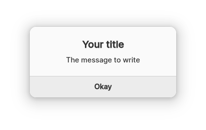

Before v0.3.0 was released creating a dialog was pretty straightforward yet
the dialog couldn't be customized at all. On top of that, those dialogs were
created instantly, leading to tiny freezes on older hardware. This changed by
the release of v0.3.0, and was replaced with an object-like model. Each dialog
features a constructor, a destructor and class members, manipulated through pointers.
This was largely inspired by Gtk's syntax, although with
a bit of personal modifications to better match NvDialog.
Let's see a bit better, what does this mean? Read the code below:
#include <nvdialog/nvdialog.h>
int main(int argc, char** argv) {
NvdDialogBox* // This is an opaque type for the object.
dialog_box = nvd_dialog_box_new(); // Constructor of the latter.
nvd_show_dialog(dialog_box); // This is irrelevant for this case, it's just used to show the dialog.
nvd_free_object(dialog_box); // This is the destructor.
}
As you can see, a dialog is nothing more than a simple opaque struct, which
holds data to show a dialog box. Which makes it very easy to customize the
dialog before showing it, reusing it and improving performance.
After the rather lengthy explanation of how NvDialog works, its time to look into
how to actually use it:
First, we have to include the header, which declares and exports everything
related to NvDialog:
#include <nvdialog/nvdialog.h>
Afterwards, we need to declare our main function. It is required to have
the argc and argv parameters also included, in order to use
nvd_init:
int main(int argc, char** argv) {
}
From there on, we have to construct a new dialog object using an initializer.
Since we are creating just a window with some text in it, we can simply use
a single NvdDialogBox:
NvdDialogBox* dialog = nvd_dialog_box_new("Your title", "The message to write", NVD_DIALOG_SIMPLE);
This is all we have to do to create a single dialog. However, constructing
the dialog and actually rendering it to the system are seperate tasks.
Each dialog type (NvdDialogBox, NvdAboutDialog) has
its own function to do that, but for this case, we can simply use
nvd_show_dialog:
nvd_show_dialog(dialog);
return 0; // Just to indicate success
After all of this, we should be able to see a dialog box:
